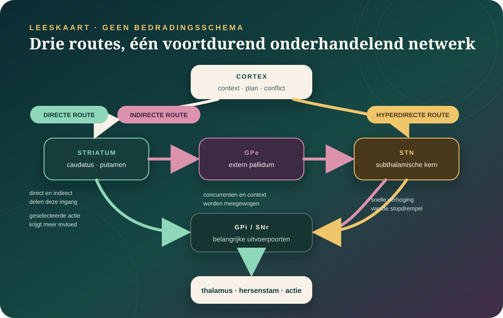

De kern in gewone taal
Geen bewegingsdirigent, wel een netwerk dat mee bepaalt welke actie invloed krijgt.
De basale ganglia zijn verbonden hersenkernen diep in het brein. Via terugkerende lussen met cortex, thalamus en hersenstam beïnvloeden ze welke beweging, gedachte of gedragsroute makkelijker wordt uitgevoerd. Ze maken de actie niet alleen en bewaren nergens één compleet “commando”.
Striatum, pallidum, subthalamische kern en substantia nigra hebben verschillende rollen en verbindingen.
Directe en indirecte routes kunnen tegelijk actief zijn. De context bepaalt wat hun activiteit betekent.
Motorische, cognitieve en affectieve lussen lopen naast elkaar zonder precies hetzelfde te doen.
“De” basale ganglia bestaan uit meerdere knooppunten.
Welke structuren men anatomisch meetelt verschilt soms per leerboek. Functioneel worden deze onderdelen meestal samen besproken omdat ze informatie in lussen doorgeven en bijstellen.
Striatum
De belangrijkste toegangspoort uit de cortex. Het dorsale striatum omvat de nucleus caudatus en het putamen; het ventrale striatum omvat onder meer de nucleus accumbens.
Globus pallidus
De externe helft (GPe) is belangrijk in interne routes. De interne helft (GPi) is een grote uitvoerpoort richting thalamus en andere gebieden.
Subthalamische kern
De STN ontvangt onder meer snelle corticale input en beïnvloedt uitvoerkernen. Hij is ook een doelwit bij diepe hersenstimulatie.
Substantia nigra
De pars compacta levert veel dopamine aan het striatum. De pars reticulata functioneert deels als uitvoerpoort, verwant aan GPi.
De lus eromheen
Cortex, thalamus, hersenstam, cerebellum en basale ganglia vormen geen losse eilanden. De functie ontstaat in hun communicatie.
Taalvalkuil: “basale kernen” is anatomisch correcter dan ganglia, want ganglion wordt meestal gebruikt voor celgroepen buiten het centrale zenuwstelsel. De historische naam bleef hangen.
Direct, indirect en hyperdirect: drie routes die tegelijk kunnen onderhandelen.

Directe route
Meer ruimte voor een geselecteerde actie.
In het klassieke model vermindert deze route de remmende uitvoer van GPi/SNr op doelgebieden. Dat kan een passend actiepatroon meer invloed geven.
Indirecte route
Concurrenten bijstellen.
Via GPe en STN verandert deze route de uitvoer van het netwerk. “Rem” is handig als eerste beeld, maar te grof voor wat cellen tijdens echte acties doen.
Hyperdirecte route
Snel de drempel verhogen.
Een korte verbinding van cortex naar STN kan brede uitvoer snel beïnvloeden, bijvoorbeeld wanneer een voorgenomen handeling plots moet stoppen.
Bij vrij bewegende muizen werden cellen van de directe én indirecte route samen actief vlak vóór een actie. Dat past beter bij selectie en verfijning van concurrerende patronen dan bij twee hendels waarvan er altijd één uit staat. Bij mensen laten intracraniële metingen bovendien snelle prefrontaal-STN-communicatie zien tijdens stoppen.
Bekijk het muisexperiment van Cui en collega’s → · Bekijk de menselijke stopstudie →
Niet “beweging coördineren”, maar de kans, kracht en timing van acties mee vormen.
De cortex kan meerdere mogelijke handelingen tegelijk voorbereiden. Basale-ganglialussen helpen bepalen welke patronen voldoende invloed krijgen, hoe krachtig ze worden uitgevoerd en wanneer een lopende actie moet worden aangepast of gestopt. De precieze taak verschilt per lus.
Motorische, associatieve en limbische routes zijn verweven. Ze mogen niet worden vertaald als drie volledig gescheiden “breinen”.
Wat voer ik uit?
Putamen, motorische cortex en uitvoerkernen beïnvloeden de start, schaal en vloeiendheid van bewegingen en bewegingsreeksen.
Welke regel past nu?
Caudatus en frontale gebieden doen mee bij leren van actie-uitkomstrelaties, planning, schakelen en beslissingen onder onzekerheid.
Wat trekt of duwt mij?
Ventrale striatale lussen verwerken onder meer verwachte waarde, inspanning en motivatie. Ze bevatten geen eenvoudige “wilskrachtmeter”.
De basale ganglia kiezen niet in jouw plaats. Ze veranderen de toegangspoort waardoor sommige mogelijkheden op dat moment makkelijker werkelijkheid worden dan andere.
Herhaling verandert actiecontrole, maar creëert geen “gewoonteknop”.
In menselijke laboratoriumstudies werd herhaald trainen gekoppeld aan activiteit in het posterieure putamen en aan minder gevoeligheid voor een veranderde uitkomst. Dat ondersteunt een rol van dorsale striatale circuits in meer automatische actiecontrole. Het bewijst niet dat men via een scan kan zien welke dagelijkse gewoonte iemand heeft.
Herhaling en posterieur putamen
Tricomi en collega’s trainden deelnemers drie dagen. Meer training hing samen met gewoonteachtig gedrag en veranderde activiteit in het posterieure dorsolaterale striatum.
Bekijk de fMRI-studie →Laboratoriumgewoonte is niet je hele leven
Een herhaalde knopdruk onder gecontroleerde omstandigheden vangt niet automatisch slaap, stress, sociale betekenis, verslaving, armoede of ontwerpkeuzes in de omgeving.
Open het volledige dossier Gewoontes →Dopamine verandert hoe het striatum leert en reageert.
Dopamine uit onder meer de substantia nigra pars compacta beïnvloedt meerdere celtypen en receptoren in het striatum. In leeronderzoek kan dopaminerge activiteit het verschil signaleren tussen een verwachte en werkelijke uitkomst. In motorische circuits verandert dopamine de balans en plasticiteit van routes.
Te simpel
“Dopamine is plezier.”
Plezier, motivatie, aandacht, beweging en leren overlappen deels, maar zijn niet één proces of één hoeveelheid stof.
Te simpel
“D1 is gas, D2 is rem.”
Receptoren en projectieroutes overlappen niet perfect. Activiteit hangt af van timing, celtype, leerfase en het patroon dat wordt geselecteerd.
Beter
Een modulator in meerdere lussen.
Dopamine verandert gevoeligheid en leren. Dezelfde term dekt verschillende signalen in verschillende delen van het brein.
Open het volledige dossier Dopamine → · Bekijk de wetenschappelijke bron →
Als verschillende knooppunten haperen, ontstaan heel verschillende ziektebeelden.
Parkinson
Niet alleen trillen.
Verlies van dopaminerge neuronen en bredere netwerkveranderingen kunnen traagheid, stijfheid, tremor en houdingsproblemen geven, maar ook slaap-, stemming- en autonome klachten. “Te weinig dopamine” is een beginpunt, geen complete verklaring.
Open het dossier Parkinson →Huntington
Niet alleen ongecontroleerde beweging.
Een erfelijke verandering in het HTT-gen leidt tot progressieve hersendysfunctie, met uitgesproken kwetsbaarheid van het striatum. Beweging, denken, gedrag en stemming kunnen veranderen.
Dystonie
Geen defect van één kern.
Onwillekeurige spiersamentrekkingen en houdingen worden steeds meer onderzocht als verstoring in een netwerk van cortex, basale ganglia, thalamus en cerebellum.
Bekijk het menselijke netwerkonderzoek →Dwang & verslaving
Circuits doen mee; ze verklaren niet alles.
Cortico-striatale verschillen kunnen betrokken zijn, maar een scan stelt geen persoonlijke diagnose en “een te sterke gewoonte” vat dwang of verslaving niet samen.
Medische grens: dit dossier is uitleg, geen diagnostiek. Nieuwe traagheid, onwillekeurige bewegingen, evenwichtsverlies of snelle verandering in denken of gedrag horen bij een arts, zeker wanneer ze plots ontstaan.
Diepe hersenstimulatie zet geen kern simpelweg “aan” of “uit”.
Bij geselecteerde mensen met gevorderde Parkinson kunnen elektroden in de STN of GPi elektrische pulsen geven. DBS kan motorische schommelingen en bepaalde symptomen verminderen, maar herstelt verloren dopaminecellen niet en stopt de ziekte niet. Instelling, medicatie, doelwit en persoonlijke risico’s vragen gespecialiseerde afweging.
STN en GPi zijn beide echte klinische doelwitten.
In een gerandomiseerde vergelijking bleven beide strategieën na drie jaar klinisch bruikbaar; uitkomsten en afwegingen verschilden per maat. Dat is geen ranglijst voor iedere patiënt.
Bekijk de driejaarsstudie →Adaptieve DBS luistert voordat ze stimuleert.
Een geblindeerde cross-overpilot uit 2024 stuurde stimulatie mee met persoonlijke hersensignalen. De resultaten waren veelbelovend, maar vier mannen zijn nadrukkelijk geen definitief werkzaamheidsbewijs.
Bekijk de adaptieve-DBS-pilot →De volgende kaart wordt dynamischer, persoonlijker en minder netjes.
Nieuwe technieken meten meerdere knooppunten tijdens echte actie en testen causale ingrepen. De sprong van muis naar mens blijft daarbij zichtbaar.
Gas en rem bewegen samen.
Optogenetische muisexperimenten tonen dat directe en indirecte striatale neuronen samen actief kunnen worden wanneer een actie begint.
Cui e.a. →De hyperdirecte route is bij mensen meetbaar.
Intracraniële registraties tijdens stoppen koppelen snelle prefrontaal-STN-communicatie aan de tijd die iemand nodig heeft om een actie af te breken.
Chen e.a. →Stimulatie kan responsief worden.
Adaptieve DBS is technisch mogelijk, maar grotere en diversere klinische studies moeten nog bepalen voor wie de meerwaarde standhoudt.
Oehrn e.a. →Basale ganglia selecteren; het cerebellum voorspelt en verfijnt — ongeveer.
Basale ganglia
Welke actie krijgt invloed?
Sterk betrokken bij actieselectie, actie-waarde, kracht, start en geleerde reeksen.
Cerebellum
Klopt timing en voorspelling?
Sterk betrokken bij foutgestuurd leren, timing, sensorische voorspelling en precieze bijsturing.
De werkelijkheid
Geen nette taakverdeling.
De systemen communiceren via thalamus en andere routes. Muisonderzoek toont zelfs een snelle cerebellum-striatumverbinding.
Bekijk het verbindingsonderzoek →Waarop deze kaart steunt.
- Dierexperiment · 2010Kravitz e.a. — Regulation of parkinsonian motor behaviours by optogenetic control of basal ganglia circuitry
Causale manipulatie van directe en indirecte routes in een muismodel voor Parkinson.
- Dierexperiment · 2013Cui e.a. — Concurrent activation of striatal direct and indirect pathways during action initiation
Gelijktijdige activiteit van beide routes rond actie-initiatie bij muizen.
- Menselijke intracraniële studie · 2020Chen e.a. — The human hyperdirect pathway predicts action stopping
Snelle prefrontaal-STN-communicatie tijdens een stoptaak bij 21 mensen.
- Menselijke fysiologie · 2018Miocinovic e.a. — Cortical potentials evoked by subthalamic stimulation
Fysiologisch bewijs voor een hyperdirecte verbinding tijdens DBS-chirurgie.
- Menselijke fMRI · 2009Tricomi, Balleine & O’Doherty — Posterior dorsolateral striatum in human habit learning
Laboratoriumonderzoek naar herhaling, uitkomstgevoeligheid en posterieur putamen.
- Dopamine-overzicht · 2016Schultz — Dopamine reward prediction error coding
De bewijsbasis voor dopamine als leersignaal; geen simpel plezierstofmodel.
- Gerandomiseerde DBS-studie · 2016Odekerken e.a. — GPi versus STN deep brain stimulation
Driejarige follow-up van twee chirurgische doelwitten bij Parkinson.
- Gerandomiseerde pilot · 2024Oehrn e.a. — Chronic adaptive versus conventional DBS
Gepersonaliseerde adaptieve stimulatie bij vier mannen met Parkinson; veelbelovend maar klein.
- Menselijk netwerkonderzoek · 2023Vo e.a. — Disordered network structure and function in dystonia
Basale-ganglia-, cerebellaire en corticale netwerkpatronen bij erfelijke en sporadische dystonie.
- Causale muisstudie · 2014Chen e.a. — The cerebellum rapidly modulates the activity of the striatum
Experimenteel bewijs voor snelle cerebellum-striatumcommunicatie.
- Functionele synthese · 2018Bostan & Strick — The basal ganglia and the cerebellum: nodes in an integrated network
Overzicht van anatomische en functionele verbindingen tussen beide systemen.
- Genetische mijlpaal · 1993Huntington’s Disease Collaborative Research Group — A novel gene containing a trinucleotide repeat
Identificatie van de mutatie die de ziekte van Huntington veroorzaakt.
Lees ook het Atlas-kompas en ons bronnenbeleid.